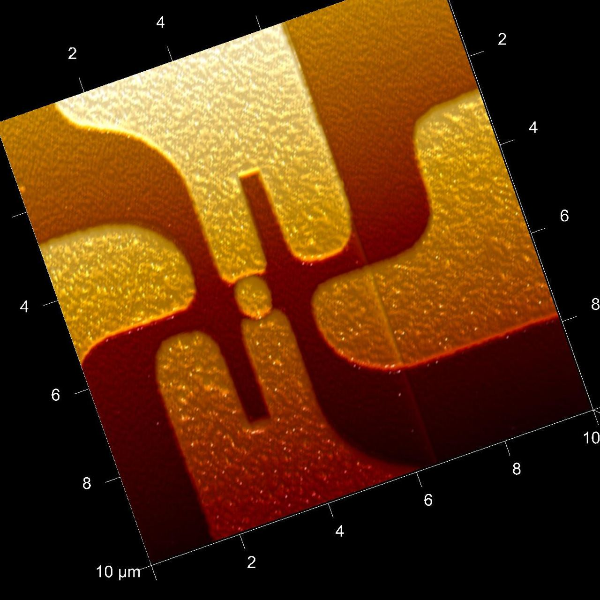
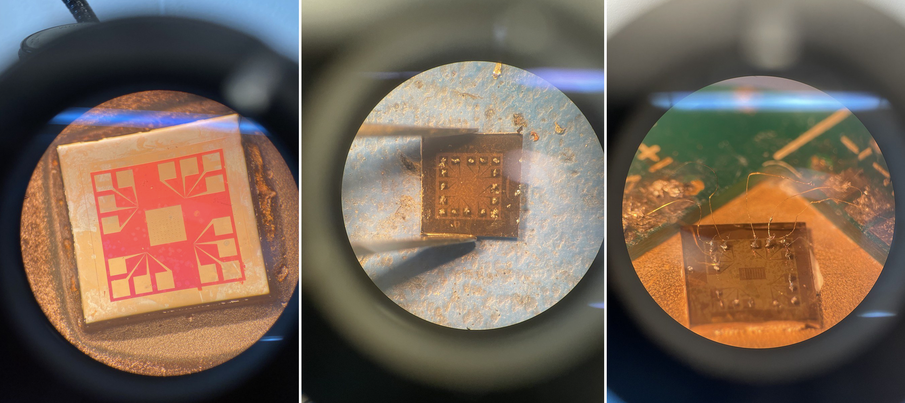
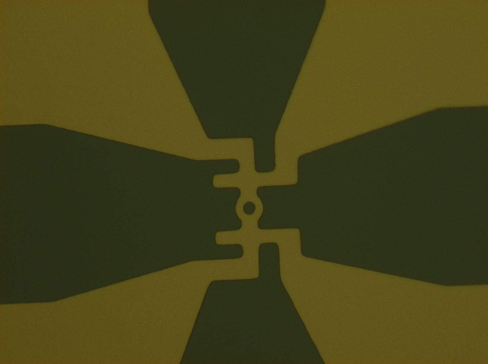
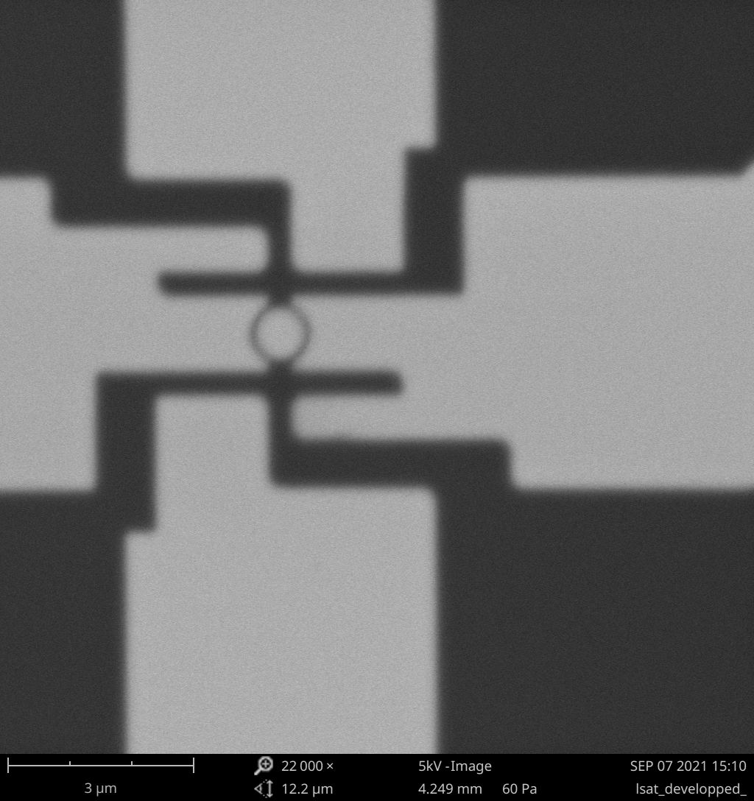
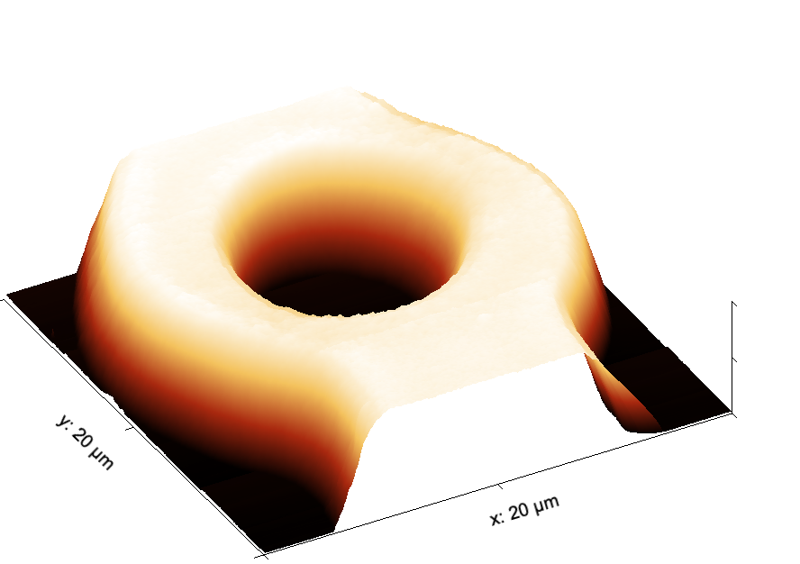
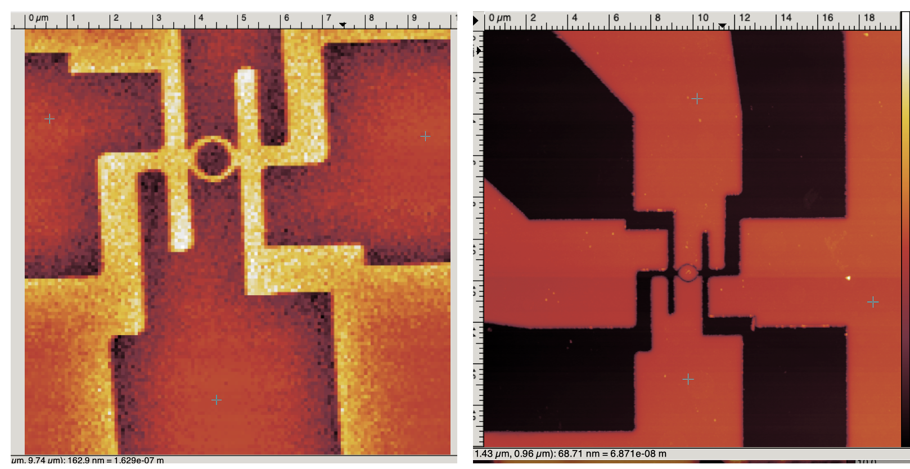
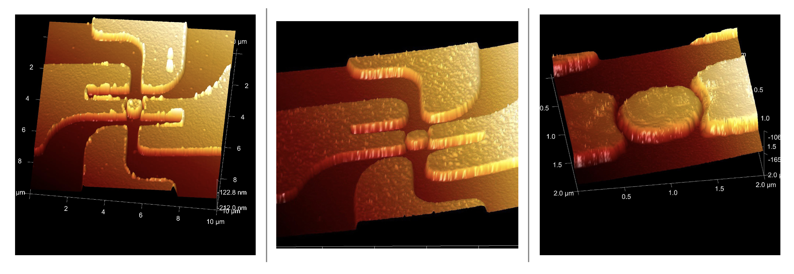

Superconducting Nanodevices • Nanofabrication • Quantum Transport
Superconducting Rings & Little–Parks Physics
Fabrication and characterization of micro- and nanoscale superconducting ring devices designed to connect device geometry with flux quantization, superconducting coherence, and macroscopic quantum behavior.

Project Overview
When device geometry becomes part of the physics
A superconducting ring is a particularly direct example of macroscopic quantum mechanics. Because the superconducting order parameter must remain single-valued around a closed path, the allowed superconducting states are constrained by fluxoid quantization.
This makes the physical dimensions of the device more than a fabrication detail. Ring diameter, linewidth, film thickness, coherence length, and magnetic flux all become connected to the superconducting response.
The superconducting flux quantum therefore contains one of the central signatures of Cooper pairing: the relevant charge is 2e rather than e.
Why rings? A multiply connected geometry provides a closed path around which the phase of the superconducting order parameter must satisfy a quantization condition. This transforms a patterned loop into a device for probing quantum coherence on a mesoscopic scale.
Device Fabrication
From thin film to electrically contacted device
The project required connecting two very different length scales: large contact structures that can be handled and electrically contacted, and a much smaller central ring where the relevant superconducting physics occurs.

Device Geometry
Bringing measurement leads to a microscopic loop
The contact geometry narrows progressively toward the central superconducting ring. This allows conventional electrical connections at the chip scale while preserving a small, well-defined multiply connected region at the center of the device.

At this scale, fabrication quality matters directly. Linewidth variations, edge roughness, incomplete pattern transfer, and local defects can alter the effective geometry of the loop and therefore complicate interpretation of magnetotransport measurements.
Electron-Beam Lithography
Defining the ring before pattern transfer
Electron-beam lithography provides the resolution required to move from micron-scale rings toward substantially smaller loop dimensions. Inspecting the developed resist before subsequent processing provides an important checkpoint for verifying that the central ring and narrow connecting features have been resolved.

Scaling Down
From micron-scale rings to nanoscale loops
Reducing the ring dimensions pushes fabrication toward the length scales relevant to superconducting coherence. At this point, electron-beam lithography, pattern-transfer fidelity, and high-resolution metrology become central to the experiment.

Fabrication challenge. As the ring dimensions shrink, small deviations in linewidth and edge definition represent a progressively larger fraction of the device geometry. High-resolution imaging therefore becomes part of the process-validation loop rather than simply a final visualization step.
Characterization
Verifying geometry with AFM
Atomic-force microscopy complements optical and electron microscopy by providing topographic information. This makes it possible to inspect the ring, surrounding leads, and height variations associated with the patterned structure.


Little–Parks Physics
Flux quantization becomes a transport signal
In a thin-walled superconducting ring near the transition temperature, the allowed superconducting state adjusts as magnetic flux is threaded through the loop. The system selects an integer winding number that minimizes its free energy.
Φ0 = h / 2e
As the applied flux changes, the preferred winding number changes periodically. The kinetic energy associated with the circulating supercurrent therefore becomes periodic in magnetic flux.
The superconducting transition temperature consequently oscillates with magnetic flux. Experimentally, the effect can be detected through resistance measurements performed within the superconducting transition, where a small shift in Tc produces a measurable change in resistance.
Little–Parks effect. The fundamental periodicity corresponds to one superconducting flux quantum passing through the effective area of the ring.
Geometry ↔ Quantum Periodicity
The oscillation period is set by the ring area
One flux quantum corresponds to a change in magnetic flux through the effective loop area of Φ0. For an approximately uniform perpendicular magnetic field, the characteristic magnetic-field period is therefore
Here Aeff represents the effective enclosed area of the superconducting loop. This provides a direct bridge between fabrication and measurement: the dimensions observed by microscopy determine the characteristic magnetic-field scale associated with flux quantization.
Why fabrication accuracy matters. The ring is not merely a container for the experiment. Its effective area enters directly into the expected quantum oscillation period. Device metrology is therefore part of the physical interpretation.
Ginzburg–Landau Picture
Connecting coherence length, ring radius and Tc
Near the superconducting transition, the Little–Parks effect can be described within Ginzburg–Landau theory. For a thin-walled ring, the suppression of the transition temperature depends on the mismatch between the applied flux and the nearest allowed fluxoid state.
The periodic array of superconducting states is centered at integer values of Φ/Φ0. Between neighboring integer states, the circulating supercurrent increases the kinetic-energy contribution and suppresses the transition temperature.
The system changes winding number as the applied flux increases, producing a periodic sequence of lowest-energy superconducting states.
Device dimensions therefore matter fundamentally: the characteristic response contains the ratio between the superconducting coherence length and the ring radius.
Project Perspective
One device, several experimental disciplines
Superconducting ring devices sit at the intersection of nanofabrication, materials science, low-temperature transport, and quantum physics. Understanding such a device requires the fabrication geometry, superconducting length scales, and electrical measurement to be considered together.
What this project demonstrates. Device design across multiple length scales, electron-beam and optical lithography, process characterization using SEM and AFM, and the ability to connect nanoscale fabrication decisions to the underlying superconducting physics.